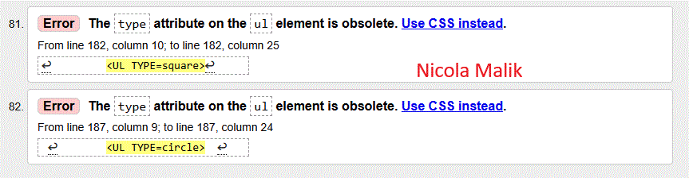

Walidacja
Walidacja strony HTML to proces sprawdzania, czy kod strony internetowej (np. HTML, CSS) jest zgodny
z oficjalnymi standardami technicznymi ustalonymi przez organizacje takie jak World Wide Web Consortium (W3C).
Służy do wykrywania błędów technicznych, które mogą wpływać na sposób wyświetlania strony w różnych przeglądarkach i urządzeniach.
Walidator to specjalistyczne narzędzie (program lub aplikacja),
które automatycznie analizuje kod strony internetowej pod kątem poprawności składni i zgodności ze standardami,
np. HTML i CSS.
Przed:

Po:

Wróć